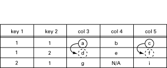
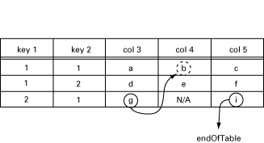

10 Instrumentation Functions
A user-defined instrumentation function for each object attaches the managed objects to real resources. This function is called by the agent on a get or set operation. The function could read some hardware register, perform a calculation, or whatever is necessary to implement the semantics associated with the conceptual variable. These functions must be written both for scalar variables and for tables. They are specified in the association file, which is a text file. In this file, the OBJECT IDENTIFIER, or symbolic name for each managed object, is associated with an Erlang tuple {Module,Function, ListOfExtraArguments}.
When a managed object is referenced in an SNMP operation, the associated {Module, Function, ListOfExtraArguments} is called. The function is applied to some standard arguments (for example, the operation type) and the extra arguments supplied by the user.
Instrumentation functions must be written for get and set for scalar variables and tables, and for get-next for tables only. The get-bulk operation is translated into a series of calls to get-next.
10.1 Instrumentation Functions
The following sections describe how the instrumentation functions should be defined in Erlang for the different operations. In the following, RowIndex is a list of key values for the table, and Column is a column number.
These functions are described in detail in Definition of Instrumentation Functions.
New / Delete Operations
For scalar variables:
variable_access(new [, ExtraArg1, ...])
variable_access(delete [, ExtraArg1, ...])
For tables:
table_access(new [, ExtraArg1, ...])
table_access(delete [, ExtraArg1, ...])
These functions are called for each object in an MIB when the MIB is unloaded or loaded, respectively.
Get Operation
For scalar variables:
variable_access(get [, ExtraArg1, ...])
For tables:
table_access(get,RowIndex,Cols [,ExtraArg1, ...])
Cols is a list of Column. The agent will sort incoming variables so that all operations on one row (same index) will be supplied at the same time. The reason for this is that a database normally retrieves information row by row.
These functions must return the current values of the associated variables.
Set Operation
For scalar variables:
variable_access(set, NewValue [, ExtraArg1, ...])
For tables:
table_access(set, RowIndex, Cols [, ExtraArg1,..])
Cols is a list of tuples {Column, NewValue}.
These functions returns noError if the assignment was successful, otherwise an error code.
Is-set-ok Operation
As a complement to the set operation, it is possible to specify a test function. This function has the same syntax as the set operation above, except that the first argument is is_set_ok instead of set. This function is called before the variable is set. Its purpose is to ensure that it is permissible to set the variable to the new value.
variable_access(is_set_ok, NewValue [, ExtraArg1, ...])
For tables:
table_access(set, RowIndex, Cols [, ExtraArg1,..])
Cols is a list of tuples {Column, NewValue}.
Undo Operation
A function which has been called with is_set_ok will be called again, either with set if there was no error, or with undo, if an error occurred. In this way, resources can be reserved in the is_set_ok operation, released in the undo operation, or made permanent in the set operation.
variable_access(undo, NewValue [, ExtraArg1, ...])
For tables:
table_access(set, RowIndex, Cols [, ExtraArg1,..])
Cols is a list of tuples {Column, NewValue}.
GetNext Operation
The GetNext Operation operation should only be defined for tables since the agent can find the next instance of plain variables in the MIB and call the instrumentation with the get operation.
table_access(get_next, RowIndex, Cols [, ExtraArg1, ...])
Cols is a list of integers, all greater than or equal to zero. This indicates that the instrumentation should find the next accessible instance. This function returns the tuple {NextOid, NextValue}, or endOfTable. NextOid should be the lexicographically next accessible instance of a managed object in the table. It should be a list of integers, where the first integer is the column, and the rest of the list is the indices for the next row. If endOfTable is returned, the agent continues to search for the next instance among the other variables and tables.
RowIndex may be an empty list, an incompletely specified row index, or the index for an unspecified row.
This operation is best described with an example.
GetNext Example
A table called myTable has five columns. The first two are keys (not accessible), and the table has three rows. The instrumentation function for this table is called my_table.

Figure 10.1: Contents of my_table
N/A means not accessible.
The manager issues the following getNext request:
getNext{ myTable.myTableEntry.3.1.1,
myTable.myTableEntry.5.1.1 }
Since both operations involve the 1.1 index, this is transformed into one call to my_table:
my_table(get_next, [1, 1], [3, 5])
In this call, [1, 1] is the RowIndex, where key 1 has value 1, and key 2 has value 1, and [3, 5] is the list of requested columns. The function should now return the lexicographically next elements:
[{[3, 1, 2], d}, {[5, 1, 2], f}]
This is illustrated in the following table:
Figure 10.2: GetNext from [3,1,1] and [5,1,1].
The manager now issues the following getNext request:
getNext{ myTable.myTableEntry.3.2.1,
myTable.myTableEntry.5.2.1 }
This is transformed into one call to my_table:
my_table(get_next, [2, 1], [3, 5])
The function should now return:
[{[4, 1, 1], b}, endOfTable]
This is illustrated in the following table:
Figure 10.3: GetNext from [3,2,1] and [5,2,1].
The manager now issues the following getNext request:
getNext{ myTable.myTableEntry.3.1.2,
myTable.myTableEntry.4.1.2 }
This will be transform into one call to my_table:
my_table(get_next, [1, 2], [3, 4])
The function should now return:
[{[3, 2, 1], g}, {[5, 1, 1], c}]
This is illustrated in the following table:

Figure 10.4: GetNext from [3,1,2] and [4,1,2].
The manager now issues the following getNext request:
getNext{ myTable.myTableEntry,
myTable.myTableEntry.1.3.2 }
This will be transform into two calls to my_table:
my_table(get_next, [], [0]) and
my_table(get_next, [3, 2], [1])
The function should now return:
[{[3, 1, 1], a}] and
[{[3, 1, 1], a}]
In both cases, the first accessible element in the table should be returned. As the key columns are not accessible, this means that the third column is the first row.
Normally, the functions described above behave exactly as shown, but they are free to perform other actions. For example, a get-request may have side effects such as setting some other variable, perhaps a global lastAccessed variable.
10.2 Using the ExtraArgument
The ListOfExtraArguments can be used to write generic functions. This list is appended to the standard arguments for each function. Consider two read-only variables for a device, ipAdr and name with object identifiers 1.1.23.4 and 1.1.7 respectively. To access these variables, one could implement the two Erlang functions ip_access and name_access, which will be in the MIB. The functions could be specified in a text file as follows:
{ipAdr, {my_module, ip_access, []}}.
% Or using the oid syntax for 'name'
{[1,1,7], {my_module, name_access, []}}.
The ExtraArgument parameter is the empty list. For example, when the agent receives a get-request for the ipAdr variable, a call will be made to ip_access(get). The value returned by this function is the answer to the get-request.
If ip_access and name_access are implemented similarly, we could write a generic_access function using the ListOfExtraArguments:
{ipAdr, {my_module, generic_access, ['IPADR']}}.
% The mnemonic 'name' is more convenient than 1.1.7
{name, {my_module, generic_access, ['NAME']}}.
When the agent receives the same get-request as above, a call will be made to generic_access(get, 'IPADR').
Yet another possibility, closer to the hardware, could be:
{ipAdr, {my_module, generic_access, [16#2543]}}.
{name, {my_module, generic_access, [16#A2B3]}}.
10.3 Default Instrumentation
When the MIB definition work is finished, there are two major issues left.
- Implementing the MIB
- Implementing a Manager Application.
Implementing an MIB can be a tedious task. Most probably, there is a need to test the agent before all tables and variables are implemented. In this case, the default instrumentation functions are useful. The toolkit can generate default instrumentation functions for variables as well as for tables. Consequently, a running prototype agent, which can handle set, get, get-next and table operations, is generated without any programming.
The agent stores the values in an internal volatile database, which is based on the standard module ets. However, it is possible to let the MIB compiler generate functions which use an internal, persistent database, or the Mnesia DBMS. Refer to the Mnesia User Guide and the Reference Manual, section SNMP, module snmp_generic for more information.
When parts of the MIB are implemented, you recompile it and continue on by using default functions. With this approach, the SNMP agent can be developed incrementally.
The default instrumentation allows the application on the manager side to be developed and tested simultaneously with the agent. As soon as the ASN.1 file is completed, let the MIB compiler generate a default implementation and develop the management application from this.
Table Operations
The generation of default functions for tables works for tables which use the RowStatus textual convention from SNMPv2, defined in STANDARD-MIB and SNMPv2-TC.
We strongly encourage the use of the RowStatus convention for every table that can be modified from the manager, even for newly designed SNMPv1 MIBs. In SNMPv1, everybody has invented their own scheme for emulating table operations, which has led to numerous inconsistencies. The convention in SNMPv2 is flexible and powerful and has been tested successfully. If the table is read only, no RowStatus column should be used.
10.4 Atomic Set
In SNMP, the set operation is atomic. Either all variables which are specified in a set operation are changed, or none are changed. Therefore, the set operation is divided into two phases. In the first phase, the new value of each variable is checked against the definition of the variable in the MIB. The following definitions are checked:
- the type
- the length
- the range
- the variable is writable and within the MIB view.
At the end of phase one, the user defined is_set_ok functions are called for each scalar variable, and for each group of table operations.
If no error occurs, the second phase is performed. This phase calls the user defined set function for all variables.
If an error occurs, either in the is_set_ok phase, or in the set phase, all functions which were called with is_set_ok but not set, are called with undo.
There are limitations with this transaction mechanism. If complex dependencies exist between variables, for example between month and day, another mechanism is needed. Setting the date to 'Feb 31' can be avoided by a somewhat more generic transaction mechanism. You can continue and find more and more complex situations and construct an N-phase set-mechanism. This toolkit only contains a trivial mechanism.
The most common application of transaction mechanisms is to keep row operations together. Since our agent sorts row operations, the mechanism implemented in combination with the RowStatus (particularly 'createAndWait' value) solve most problems elegantly.